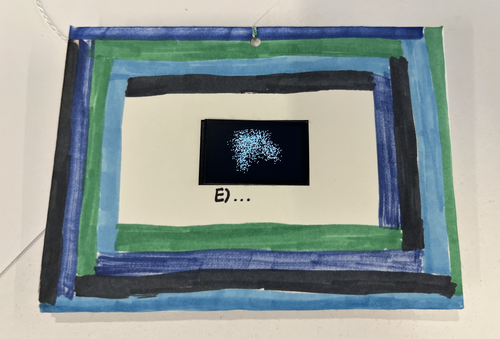

Chasing Fireflies
An interactive Processing game where players catch glowing fireflies using a joystick, button, and potentiometer with custom animations, progressive difficulty, and a persistent leaderboard.
Video
Inspiration & Design Decisions
This project was inspired by catching fireflies and a particular reference that stood out when creating the feel of the game was a lyric video for the Broadway show Maybe Happy Ending.

I wanted the fireflies to have simple black bodies with different color glows. The colors were inspired by the blue ghost firefly (Phausis reticulata), the Big Dipper firefly (Photinus pyralis), and Photuris versicolor.

I sketched out the main screens I wanted my game to have which were Home, Gameplay, Release Animation, and Score

I had originally planned to create a scrapbook page where players could get factual information about the fireflies, but the gameplay mechanic I decided on which rewarded more points for rare fireflies made the game diverge from reality and adding the informational cards made less sense at that point.
Technical Implementation
I created a keyboard version of the game in Processing with ChatGPT (model) and then added the physical input controls to the Processing script manually. Example Prompts: Iterating on UI prompts I modified the joystick example code we were provided with so that all of the physical inputs were included and could be printed on a single line. Then Mapping jar size and speed to the potentiometer One of the key functions I iterated on was () The issue was that after a firefly was caught the next round would start immediately and another catch would be registered instantly because the button was still pressed at the start of the round, causing a missed catch and terminating the game. To solve this, I added a time check between button presses so a button press would only be registered as a catch if 2 seconds had passed. I added a new variable (), checked that 2 seconds had passed between the last catch and the current catch, and then updated the last catch variable to be the time of the current catch.
To achieve this effect, I first thought I would display images and then have random sections of one image fading out while random sections of the other image were added to the screen. To prepare the images for the display, I used a photo outline tool , saving as a JPG, and an image converter to make them compatible with the display.
But having the image show up and disappear in pieces didn’t provide the morphing effect I was looking for, so I transitioned to SVG files.
I used the same photo outline tool , saving as an SVG instead. Then a Python script, svg_to_points, samples points along SVG paths and converts them into lists of coordinates that can be displayed on the screen.
Converting the mascots into point clouds allowed each point to be mapped from one image to another. Rather than disappearing and reappearing in fragments, the mascots could continuously transform, creating a visual sense of identity shifting over time.

I then made subtle refinements so that the final mascot would fade rather than explode into a burst of points and so that the box on the selection screen would align better with the text.
When decorating the envelope, I decided to use the school colors to tie back into the mascots displayed on the screen. I also added an option E left blank so that viewers could imagine alternate possibilities or paths not yet taken.